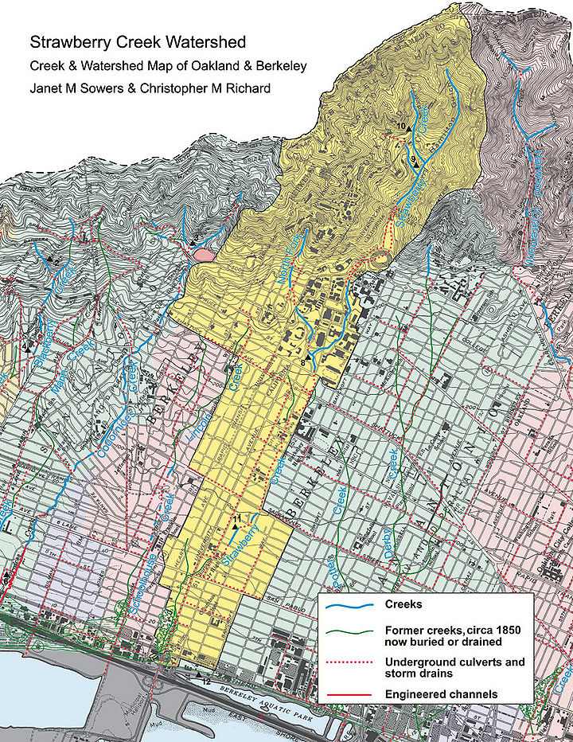
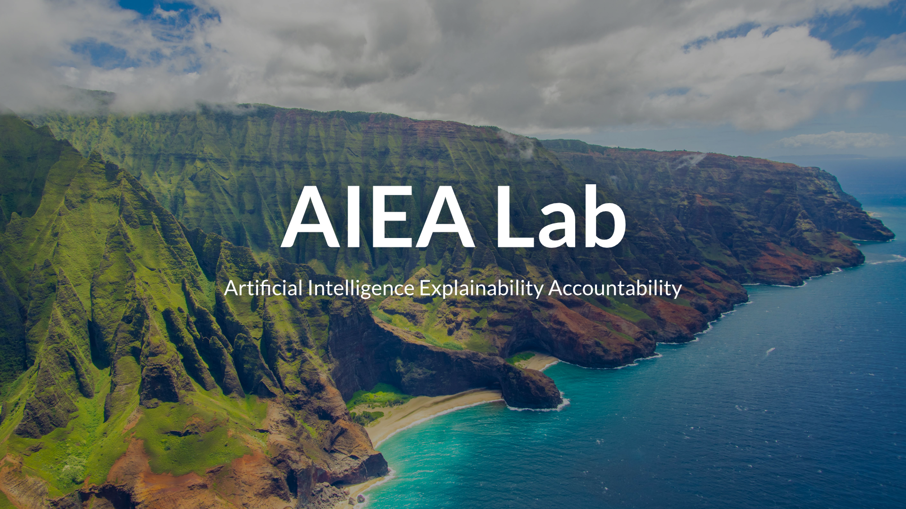
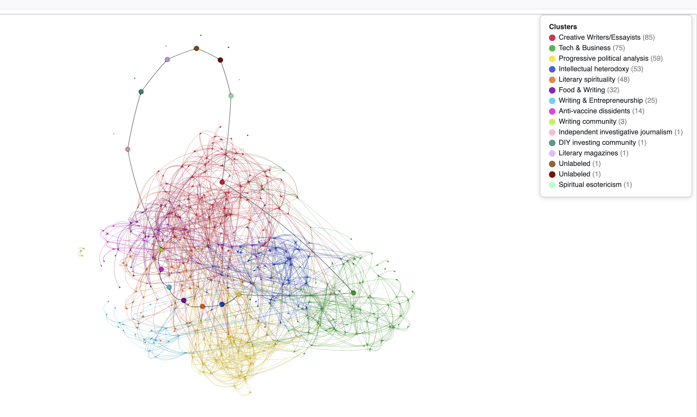

Lawrence Berkeley National Laboratory @ UC Berkeley Machine Learning Intern
fluid mechanics and convelutional/graph neural networks
I'm currently working as a Physics x Machine Learning Intern at the Watershed SFA lab at LBNL, building multi-modal agents for hydrological data intepretation and machine learning models with integrated physics
GitHub

AIEA Lab @ UC Santa Cruz Engineering Intern
XAI and model engineering
I'm a Machine Learning Intern at the Artificial Intelligence Explainability and Accountability Lab at UCSC, where I train and develop compact XAI models for scientific machine learning. I’m optimizing neural architectures for neuro-symbolic AI systems reaching 95–98%+ accuracy and training 50K–150K+ parameter deep learning models through Python/Jupyter pipelines
GitHub

Mathematical Foundations of Computer Science Lab, Chapman University Research Intern
linear algebra, centrality and semantics
Interned at Chapman University’s Mathematical Foundations of Computer Science Lab, where I worked with Professor Alex Kurz on a Substack research platform using PostgreSQL-backed data pipelines, linear algebra, and centrality methods to analyze relationships between writers and ideas; improved pipeline performance by ~20% and ingestion capacity by ~30%
GitHub


.gif)